まずは3分。
無料で、あなたの現在地がわかります。
Problem
思い当たることは、
ありますか。
- スタッフに、気持ちが伝わらない
- 自分のやり方を引き継げず、現場から離れられない
- 事業を広げたいが、何から始めればいいかわからない
- 集客が、止まった
- スタッフが、すぐ辞めてしまう
- とにかく、時間がない
- やりたいことを、うまく言葉にできない
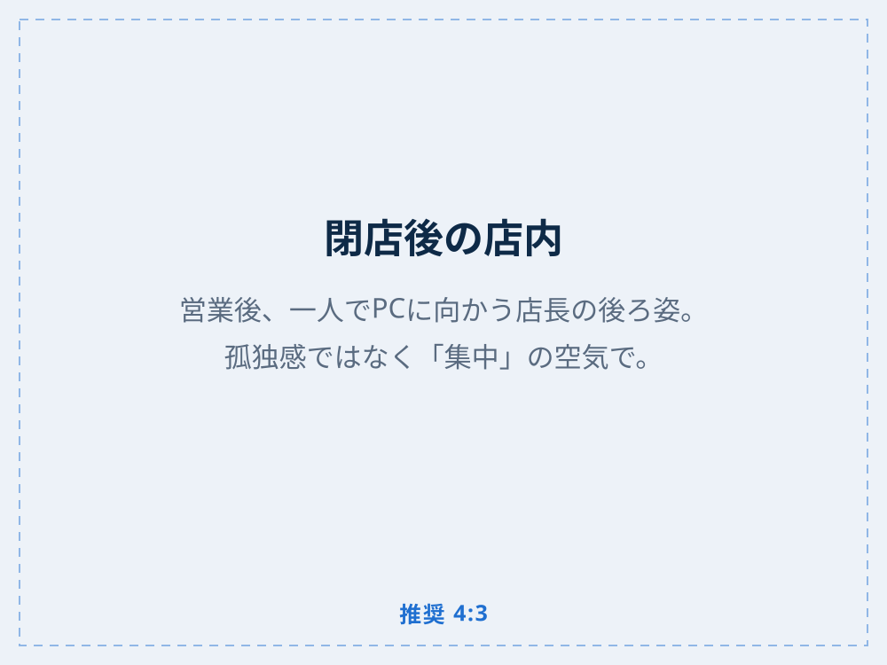
どれも、腕が悪いから
起きていることではありません。
Reality
腕を上げても、
越えられない壁があります。
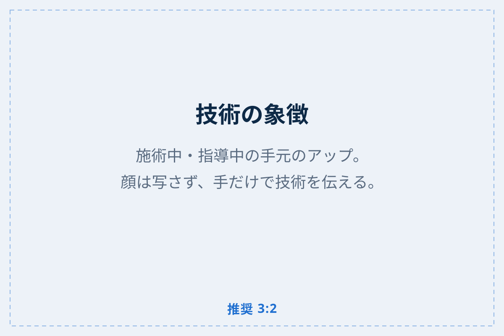
技術で解決できることは、技術を磨けば解決できる。
あなたはずっと、そうやって越えてきたはずです。
でも——
スタッフが辞めることも、言葉が伝わらないことも、
時間が足りないことも、
技術の先には、答えがありません。
ここから先は、
別の技術が要ります。
Management
経営とは、
いい仕事を続けるための
技術です。
お金を増やすための知識ではありません。
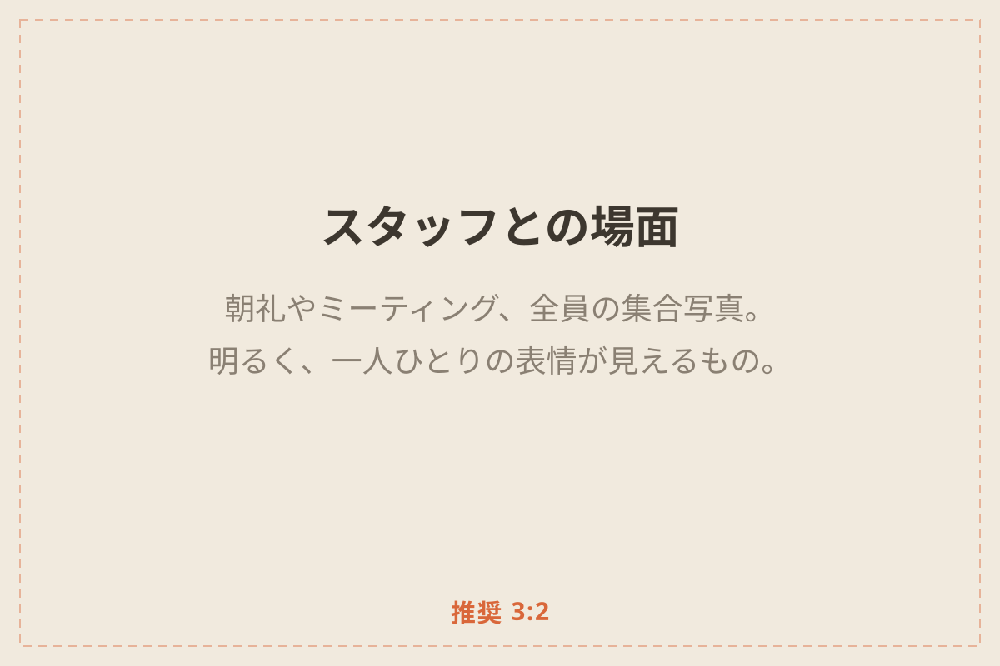
明日も、来月も、十年後も、
同じ質の仕事をお客様に届け続けること。
そのために、スタッフの生活を守ること。
自分の技術を、次の人に渡すこと。
それを可能にするのが、経営という技術です。
経営を学ぶことは、
職人をやめることでは
ありません。
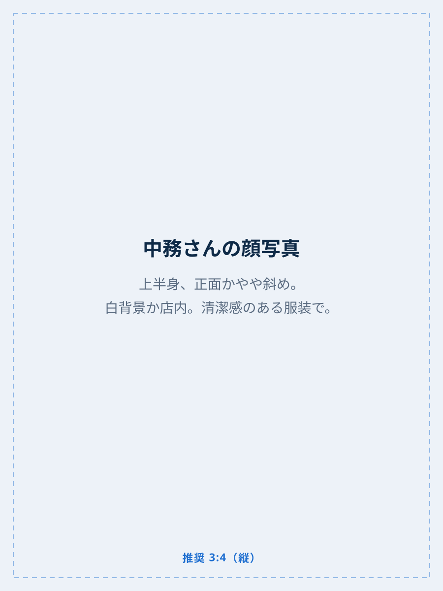
この診断をつくった人
中務正幸株式会社NeeDS 代表取締役
- 元プロ野球（阪神タイガース）・MLB傘下トレーナー
- 神戸・六甲道でパーソナルジムを3店舗、10年以上
- プロゴルファー、元サッカー日本代表、陸上日本一、世界戦経験ボクサーを指導
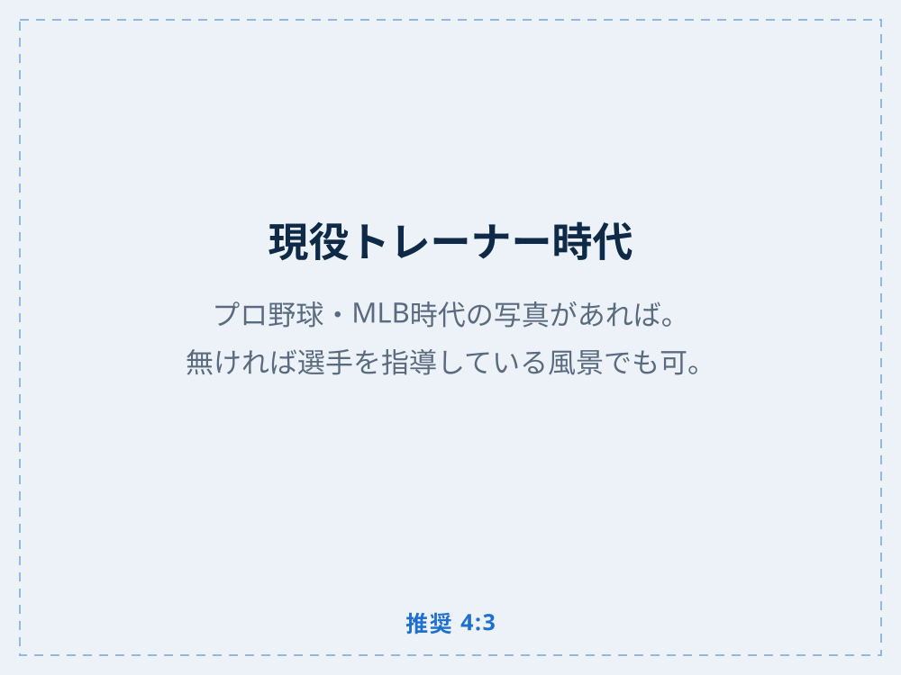
私も、技術の人間でした。
選手の体を診ることはできても、
スタッフに気持ちを伝えることはできませんでした。
中身のないコンサルに大金を払い、
一番辞めてほしくない人に、辞められました。
長い間、それを人のせいにしていました。
本当は、経営者としての自分の責任でした。
いま教えていることは、
少し前の自分が、
教えてほしかったことです。
経営を教える人は、たくさんいます。
でも、いま実際に店舗を回している人は、あまりいません。
私はまだ成長の途中です。だから、机上の話にはなりません。
Five Areas
見るべきものは、5つです。
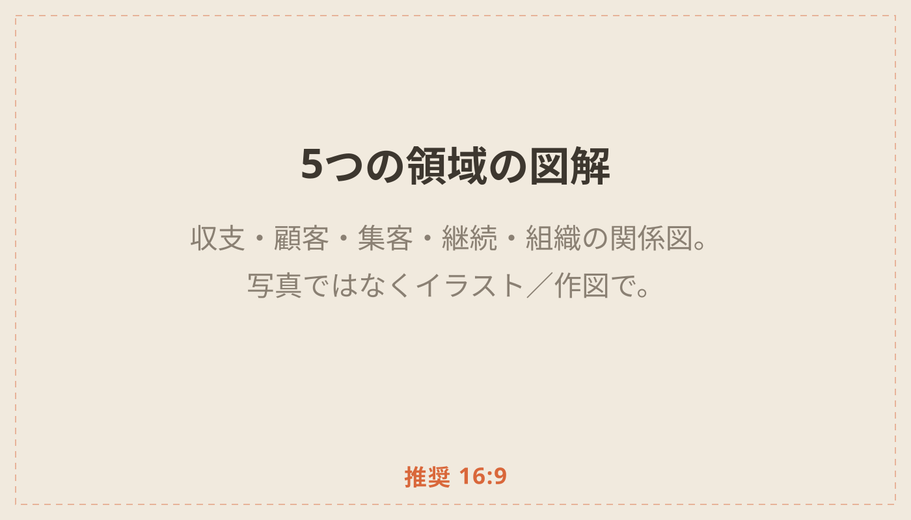
- 01収支の把握数字で判断できるようになる
- 02顧客の把握お客様を、感覚ではなく事実で知る
- 03集客力選ばれ続ける導線をつくる
- 04継続力通い続けてもらう仕組みをつくる
- 05組織力人が育ち、辞めない場をつくる
全部をいっぺんには、
無理です。
だから、順番を決めます。
どこから手をつけるか、
3分で見えます。
Diagnosis
まず、
現在地を測りませんか。
- 3分
- 20問
- 0円
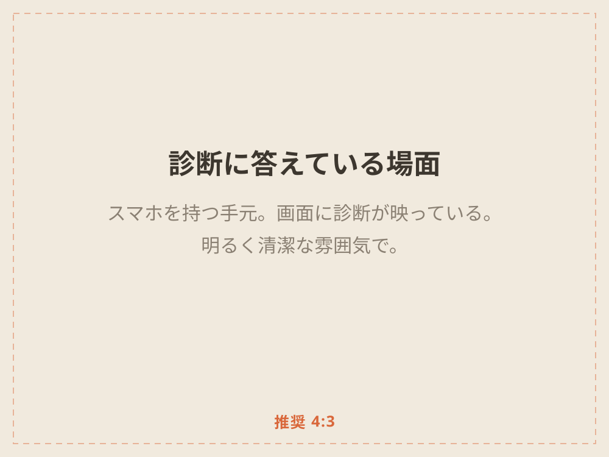
- 数字がわからなくても答えられます
- 一人で運営していても受けられます
- スマホだけで終わります
他人と比べる診断では
ありません。
あなたが決めた目標と
比べます。
What You Get
3分後に、これが見えます。
01
目標までの距離
目指す姿と、現在地の差
02
いまの準備度
その目標に、体制がどれだけ追いついているか
03
9つの数字
経営に必要な9つのうち、いくつが手の内にあるか
04
次の3つ
明日から手をつける順番
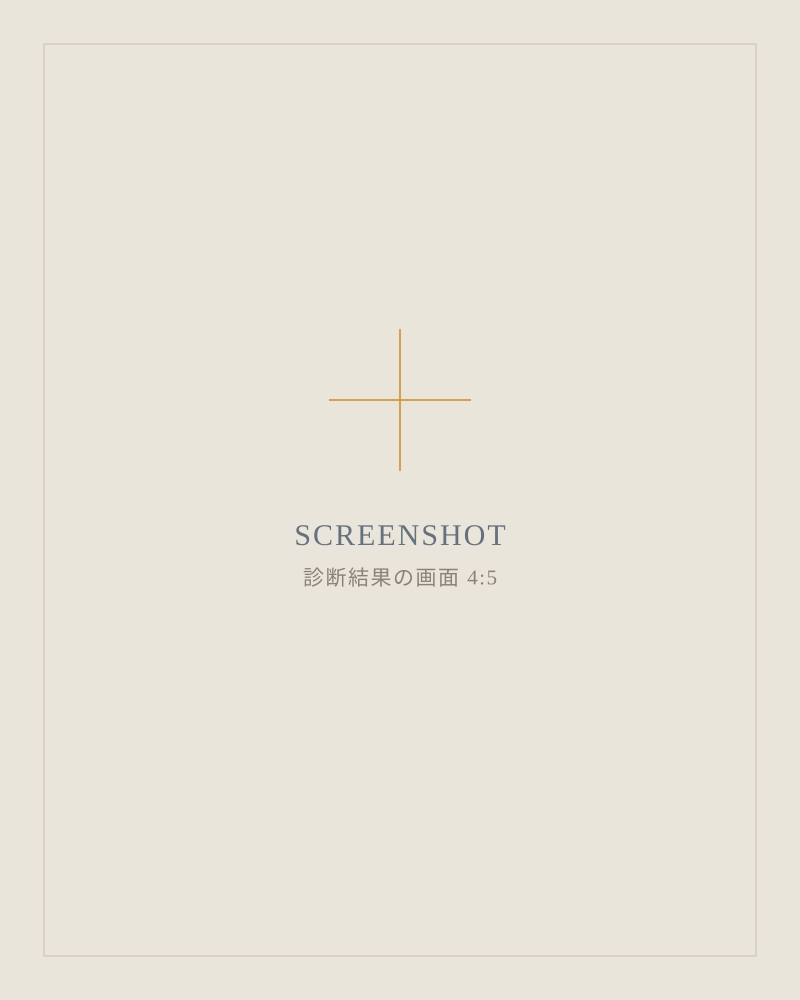
これは、できていない探しでは
ありません。
伸びしろの地図です。
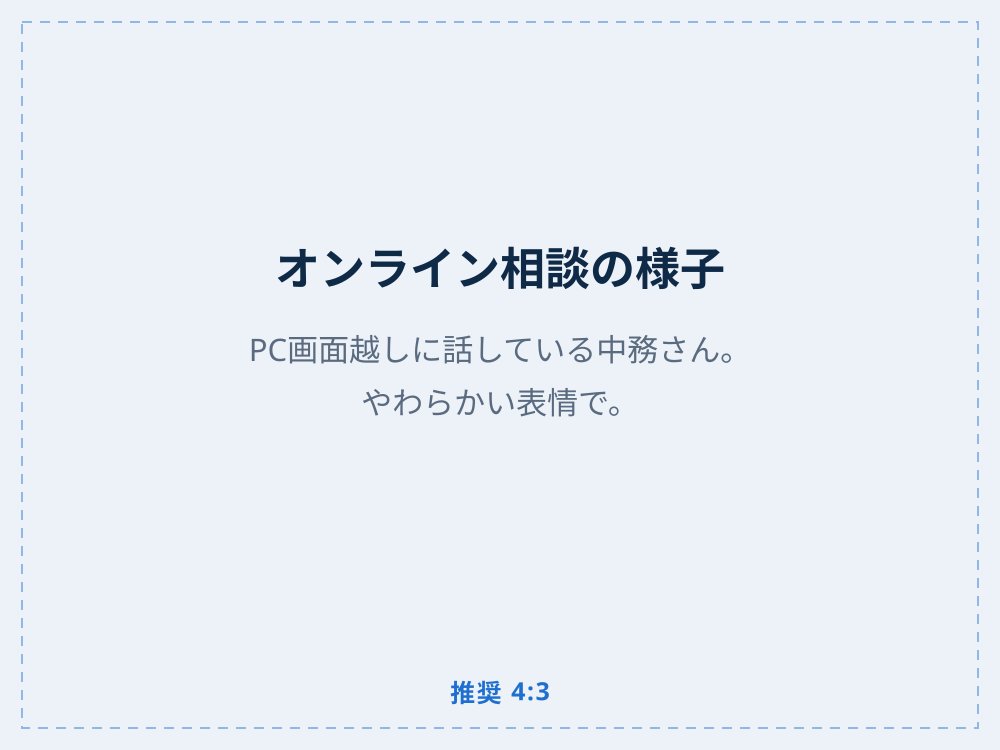
Free Session
診断のあと、
30分だけお話しします。
出た差を、どこから埋めるか。
一緒に、順番を決めます。
10名まで。無料です。
私もまだ、駆け出しのコンサルです。
だからまず、話を聞かせてください。
役に立てるかどうかは、そのあと決めてもらえれば十分です。
オンラインで行います。売り込みはしません。
Gift
診断のあとに、
設計図を1枚お渡しします。
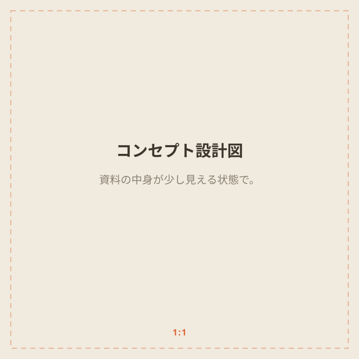
01
コンセプト設計図
「うちは何屋なのか」を一枚の言葉に
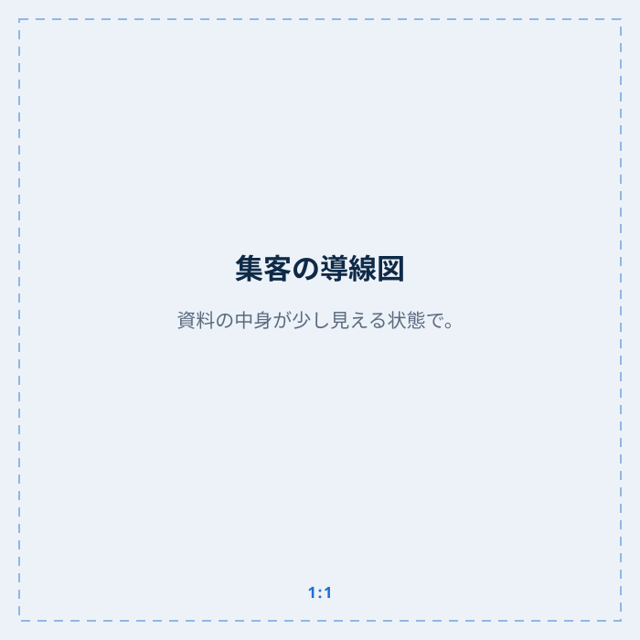
02
集客の導線図
お客様がどこから来て、なぜ続けるのか
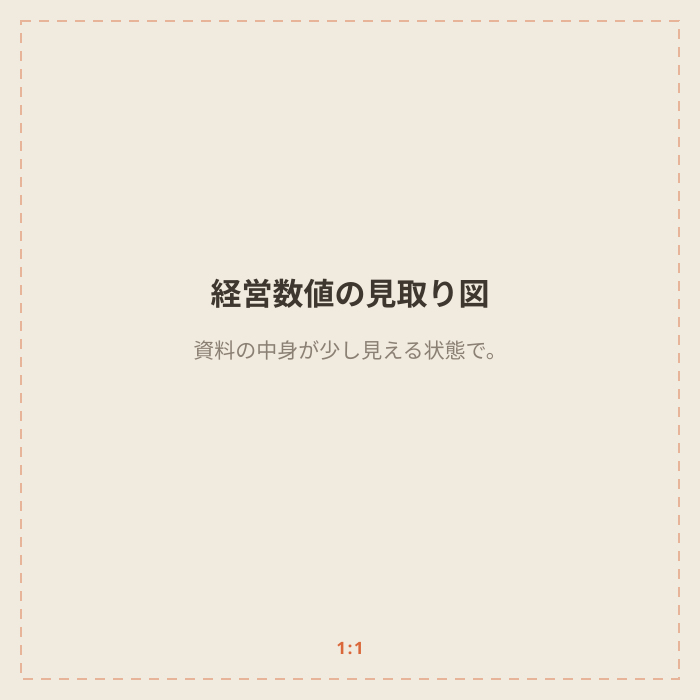
03
経営数値の見取り図
見るべき9つの数字と、見る順番
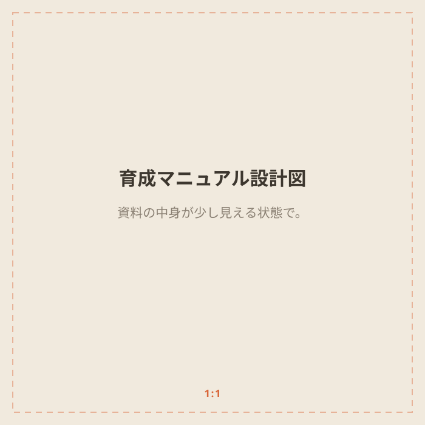
04
育成マニュアル設計図
あなたの型を、人に移す手順
診断で出た、あなたの優先課題に
合うものをお渡しします。
How to Start
受け取り方
-
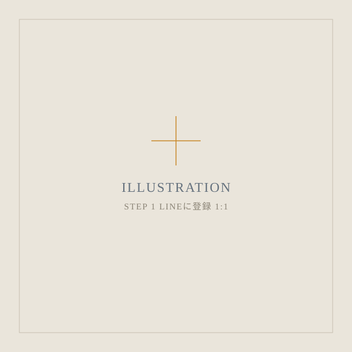
STEP 1
LINEに登録する
-
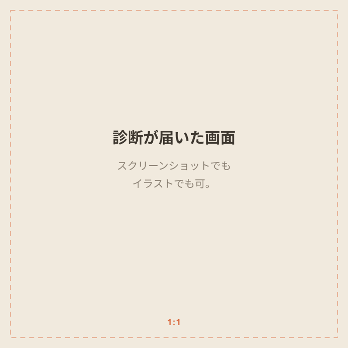
STEP 2
診断が届く
-
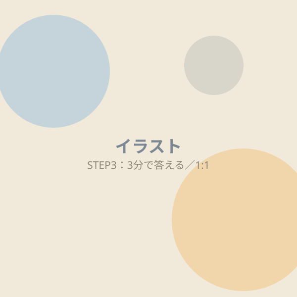
STEP 3
3分で答える
FAQ
よくある質問
売り込まれませんか？
しません。まずお話を伺いたいだけです。
数字がわからなくても大丈夫ですか？
大丈夫です。「把握しているか」を選ぶだけで答えられます。
一人で運営しています。
組織の設問を除いて診断できます。
ジム以外でも受けられますか？
整体院・サロンなど、店舗型であれば受けられます。